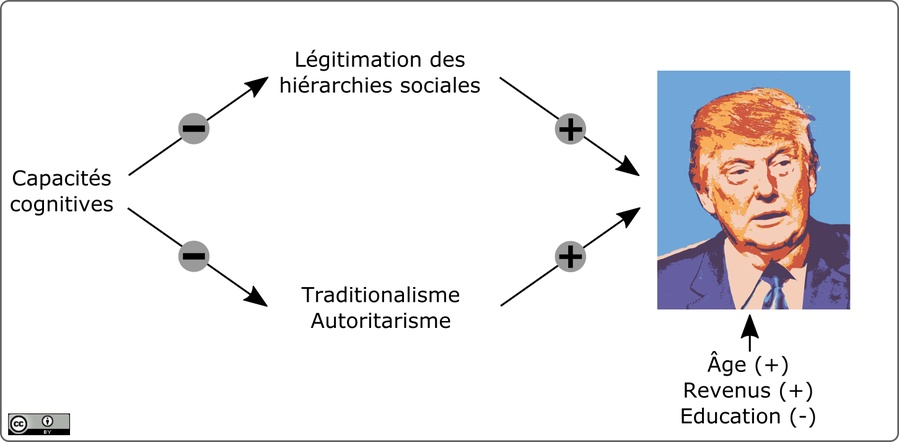

Intitulé «Capacité cognitive et autoritarisme : comprendre le soutien pour Trump et Clinton», l’article de Becky Choma et Yaniv Hanoch décrit le rapport complexe existant entre capacité cognitive et soutien au nouveau président américain, Donald Trump.
Concrètement, les chercheurs ont invité 400 électeurs américains à remplir un test de quotient intellectuel (très abrégé, d’où l’emploi du terme vague de «capacité cognitive») et une série de questionnaires. Parmi ces derniers, des questions sur les intentions de vote et les opinions pro-Trump, mais également deux échelles de personnalité connues sous le nom de SDO (pour Social Dominance Orientation) et RWA (pour Right-Wing Authoritarism).
Le SDO est très fréquemment utilisé en psychologie pour évaluer la tendance à légitimer les rapports hiérarchiques au sein des sociétés (ex : hommes-femmes, blancs-minorités, etc.). Le RWA est quant à lui utilisé pour évaluer la tendance à désirer un gouvernement autoritaire, conservateur et faisant respecter les traditions, notamment religieuses.
Le lien indirect entre Trumpisme et intelligence
Si les résultats indiquent qu’il n’existe pas de lien direct entre intelligence et vote Trump, ils soulignent en revanche l’existence d’un lien indirect.
En effet, une analyse par «pistes causales» (path analysis en anglais, PDF) a révélé qu’une capacité cognitive plus faible est associée, en moyenne, à une légitimation plus forte des rapports de domination en place (SDO) ainsi qu’à une attraction plus forte pour les politiques autoritaires et traditionalistes (RWA). Or, comme ces deux échelles ont un puissant impact sur l’adhésion aux thèses de Donald Trump (et plus généralement, aux thèses conservatrices), l’intelligence a sans doute bel et bien joué un rôle indirect sur l’issue des présidentielles américaines.
Pour résumer, les individus ayant un QI plus faible auraient en moyenne voté un peu plus souvent pour Trump, en raison d’une sensibilité accrue aux discours qui proposent de renforcer la domination de certains groupes sociaux sur d’autres, à partir de distinction religieuses ou raciales. Il aurait été intéressant de savoir si ces mêmes électeurs valident aussi volontiers les rapports d’autorité fondés sur des distinctions d’ordre intellectuel ou académique, mais les chercheurs n’ont pas abordé cette question.

Evidemment, l’étude ayant été effectuée sur Internet et l’évaluation de l’intelligence restant très sommaire, il faut interpréter ses résultats avec précaution. En outre, bien qu’il soit statistiquement significatif, l’effet n’explique qu’une faible part de la variance dans les intentions de vote (moins de 5%). Enfin, le mécanisme liant intelligence et opinions politiques pourrait être différent aux Etats-Unis et en France.
Ceci étant dit, les chercheurs ont pris en compte l’influence de nombreuses autres variables sur le résultat, ce qui est un atout. Par exemple, leurs données montrent qu’être plus vieux ou plus riche facilite le vote Trump, tandis qu’être plus éduqué facilite le vote Clinton, mais la prise en compte de ces facteurs démographiques ne change rien à l’effet principal de l’étude: le lien indirect « intelligence → SDO/RWA → vote Trump » se maintient.
Une lutte pour la simplicité
L’étude de Choma et Hanoch est-elle pertinente pour endiguer la percée des idées d’extrême droite dans la société française?
Peut-être. En effet, si la difficulté à comprendre le monde dans lequel nous vivons est la raison du repli communautaire et du désir autoritaire, il apparaît essentiel que la (vraie) gauche parvienne à formuler de façon plus claire sa vision du monde et son projet pour le futur. En d’autres mots, qu’elle parvienne à simplifier son propos sans sombrer dans le simplisme et sans se renier.
Certains objecteront qu’il est techniquement impossible de faire plus simple que le manichéisme primaire d’un Trump ou d’une Le Pen ?
Mais ce n’est pas forcément vrai. Après tout, les discours d’extrême droite reposent sur la construction d’un monde binaire distinguant eux et nous, tandis que la gauche internationaliste a toujours poursuivi l’idée d’un monde unaire, celui de l’humain.
Mettre cet humain au premier plan et montrer toute la difficulté d’établir une démarcation sensée et non arbitraire entre eux et nous pourrait à terme faire changer la simplicité de camp.